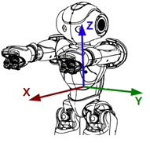

机器人运动#
ALMotion模块#
它包括四组主要的控制方法: 关节刚度(电机基本开断)；关节位置(插补、反应控制)；步行(距离和速度控制，世界位置等)；笛卡尔空间中的机器人执行器(逆运动学，全身约束)。ALMotion模块还实现了自碰撞避免、外部碰撞避免、跌落控制、智能调节刚度和诊断效果等功能。ALMotion运行在50Hz(周期20ms)。在ALMotion中，每当您调用一个公共方法来请求一个动作时，就会创建一个“动作任务”来处理该任务。
基本参数#
X轴正向机器人的前方，Y轴从右到左，Z轴垂直向上。

函数方法#
ALMotion提供帮助机器人移动的方法。它包含允许您操作关节刚度、关节角度的命令，以及允许您控制行走的更高级别API。
刚度控制API#
ALMotion.wakeUp()#
唤醒机器人，打开电机，如果需要，恢复到初始位置。如果机器人已经激活，调用立即返回True。
成功返回True, 否则返回False
ALMotion.rest()#
使机器人休眠: 并进入一个放松和安全的位置，并关闭电机。例如，进入蹲姿，并关闭刚度。
ALMotion.setStiffnesses(names, stiffnesses)#
设置一个或多个关节的刚度，这是一个非阻塞调用。
Parameters:
names- 关节名称, “Body”, “JointActuators”, “Joints” or “Actuators”.
stiffness- 在0和1之间的一个或多个刚度参数。
ALMotion.getStiffnesses(names)#
获取一个或多个关节的刚度。
Parameters:
names- 关节名称, “Body”, “JointActuators”, “Joints” or “Actuators”.Return：
stiffness- 在0和1之间的一个或多个刚度参数。
关节控制#
`ALMotion.angleInterpolation (names,angleLists,timeLists,isAbsolute )`
插入一个或多个关节到目标角度或沿时间轨迹。这是一个阻塞调用。
Parameters:
names-关节名称, “Body”, “JointActuators”, “Joints” or “Actuators”.
angleLists-以弧度表示的角、角列表或角列表
timeLists- 时间，时间列表或时间列表，以秒为单位
isAbsolute- 如果为真，运动被描述为绝对角度，否则角度是相对于当前的角度
ALMotion.angleInterpolationWithSpeed(names,targetAngles,maxSpeedFraction)#
插值使一个或多个关节到一个目标角度，使用一个最大关节速度的百分比。每个关节只允许一个目标角。这是一个阻塞调用。
Parameters:
names-关节名称, “Body”, “JointActuators”, “Joints” or “Actuators”.
targetAngles-以弧度表示的角、角列表或角列表
maxSpeedFraction- 一个百分比
ALMotion.setAngles(names, angles, fractionMaxSpeed)#
设置角度，这是一个非阻塞调用。
Parameters:
names-关节名称, “Body”, “JointActuators”, “Joints” or “Actuators”.
targetAngles-以弧度表示的角、角列表或角列表
fractionMaxSpeed- 占最大速度的百分比
ALMotion.changeAngles(names, angles, fractionMaxSpeed)#
改变角度，这是一个非阻塞调用。
Parameters:
names-关节名称, “Body”, “JointActuators”, “Joints” or “Actuators”.
targetAngles-以弧度表示的角、角列表或角列表
fractionMaxSpeed- 占最大速度的百分比
ALMotion.getAngles(names, useSensors)#
获得所有关节的角度
Parameters:
names-关节名称, “Body”, “JointActuators”, “Joints” or “Actuators”.
useSensors-如果设置为True， 传感器角度会被返回Return： 以弧度为单位的关节角度
运动控制#
ALMotion.move(x, y, theta)#
使机器人以给定的速度运动，这是一个非阻塞调用。
Parameters:
x-沿x轴的速度，单位是米每秒。向后运动为负值
y-沿y轴的速度，单位是米每秒。向左移动为正值
theta- 绕z轴的速度，单位是弧度/秒。顺时针旋转为负值。
ALMotion.moveToward(x, y, theta)#
使机器人以给定的归一化速度运动，这是一个非阻塞调用。
Parameters:
x-沿x轴的归一化速度，单位是米每秒。向后运动为负值，+1为最大值
y-沿y轴的归一化速度，单位是米每秒。向左移动为正值，+1为最小值
theta- 绕z轴的归一化速度，单位是弧度/秒。顺时针旋转为负值。
ALMotion.moveTo(x, y, theta)#
使机器人以给定的归一化速度运动，这是一个非阻塞调用。
Parameters:
x-沿x轴的距离，单位是米
y-沿y轴的距离，单位是米
theta- 绕z轴的旋转，单位是弧度， 范围为[-3.1415 to 3.1415]。Return： 如果抵达返回True, 被中断则返回False
ALMotion.stopMove()#
停止运动
笛卡尔控制#
ALMotion.setPositions(effectorNames, frame, position, fractionMaxSpeed, axisMask)#
随着时间的推移，移动末端执行器到给定的位置和方向。这是一个阻塞调用。
Parameters:
effectorNames- Name or names of effector. Could be: “Torso” or chain name.
frame-任务坐标系
position- Position6D array (x,y,z,wx,wy,wz) in meters and radians
fractionMaxSpeed- 最大速度的百分比
axisMask- The Axis Mask or Axis Mask list. True for axes that you wish to control. e.g. 7 for position only, 56 for rotation only and 63 for both
#! /usr/bin/env python
# -*- encoding: UTF-8 -*-
"""Example: Use setPositions Method"""
import qi
import argparse
import sys
import time
import motion
def main(session):
"""
This example uses the setPositions method.
"""
# Get the services ALMotion & ALRobotPosture.
motion_service = session.service("ALMotion")
posture_service = session.service("ALRobotPosture")
# Wake up robot
motion_service.wakeUp()
# Send robot to Pose Init
posture_service.goToPosture("StandInit", 0.5)
# Example showing how to set LArm Position, using a fraction of max speed
chainName = "LArm"
frame = motion.FRAME_TORSO
useSensor = False
# Get the current position of the chainName in the same frame
current = motion_service.getPosition(chainName, frame, useSensor)
target = [
current[0] + 0.05,
current[1] + 0.05,
current[2] + 0.05,
current[3] + 0.0,
current[4] + 0.0,
current[5] + 0.0]
fractionMaxSpeed = 0.5
axisMask = 7 # just control position
motion_service.setPositions(chainName, frame, target, fractionMaxSpeed, axisMask)
time.sleep(1.0)
# Example showing how to set Torso Position, using a fraction of max speed
chainName = "Torso"
frame = motion.FRAME_ROBOT
position = [0.0, 0.0, 0.25, 0.0, 0.0, 0.0] # Absolute Position
fractionMaxSpeed = 0.2
axisMask = 63
motion_service.setPositions(chainName, frame, position, fractionMaxSpeed, axisMask)
time.sleep(4.0)
# Go to rest position
motion_service.rest()
if __name__ == "__main__":
parser = argparse.ArgumentParser()
parser.add_argument("--ip", type=str, default="127.0.0.1",
help="Robot IP address. On robot or Local Naoqi: use '127.0.0.1'.")
parser.add_argument("--port", type=int, default=9559,
help="Naoqi port number")
args = parser.parse_args()
session = qi.Session()
try:
session.connect("tcp://" + args.ip + ":" + str(args.port))
except RuntimeError:
print ("Can't connect to Naoqi at ip \"" + args.ip + "\" on port " + str(args.port) +".\n"
"Please check your script arguments. Run with -h option for help.")
sys.exit(1)
main(session)
ALMotion.getPositions(name, frame, useSensorValues)#
获取相对于坐标系的位置。x轴为正方向，y轴从右到左，z轴为垂直方向。Position6D的角度约定是Rot_z(wz). rot_y (wy). rot_x (wx)。
Parameters:
name- Name or names of effector. Could be: “Torso” or chain name.
frame-任务坐标系
useSensorValues- 如果为真，传感器值将用于确定位置。
ALRobotPosture模块#
ALRobotPosture模块可以让机器人切换到不同的预定义姿势。您可以在ALRobot.goToPosture和ALRobotPosture.applyPosture之间选择。
如果你想创建一个机器人自动执行的应用程序，请始终选择ALRobotPosture.goToPosture。
在操作机器人时，如果你只是想要快速到达姿势的捷径，你可以使用ALRobotPosture.applyPosture(你将不得不帮助机器人)。
机器人检测到它当前的姿态，并自动计算从当前姿态到目标姿态的路径，然后执行，在此过程中用户可以选择执行速度的快慢。
预定义姿势#
机器人的姿态是其关节和惯性传感器的(独特的)结构。由于姿势是由一组实数(比如浮点数)定义的，所以姿势的数量是无限的。
以下是预先定义的姿势名称列表:
Crouch,LyingBack,LyingBelly,Sit,SitRelax,Stand,StandInit,StandZero.
Posture Family:
| Posture Family | Description |
|---|---|
“Standing” |
重量由脚支撑，躯干直立，腿直立。 |
“Crouching” |
重量由脚支撑，躯干直立，腿弯曲。 |
“Sitting” |
臀部与地面接触，躯干直立。 |
“SittingOnChair” |
臀部与椅子(10厘米高)接触，躯干直立。 |
“LyingBelly” |
躺下，脸朝下。 |
“LyingBack” |
躺下，脸朝上。 |
“LyingLeft” |
躺下，脸朝左。 |
“LyingRight” |
躺下，脸朝右。 |
“Belly” |
脸朝下，躯干抬起。 |
“Back” |
脸朝上，躯干抬起。 |
“Left” |
向左倾斜，手触地。 |
“Right” |
向右倾斜，手触地。 |
函数方法#
ALRobotPosture.getPostureList()#
Return：所有预定义的机器人姿势的vector
from naoqi import ALProxy
posture = ALProxy("ALRobotPosture", "<IP of your robot>", 9559)
posture.getPostureList()
['Crouch', 'LyingBack', 'LyingBelly', 'Sit', 'SitOnChair', 'SitRelax', 'Stand', 'StandInit', 'StandZero']
ALRobotPosture.getPosture()#
返回当前预定义姿势的名称。如果当前姿势不在预定义姿势中，则返回"未知"
Return: 当前姿势的字符串
from naoqi import ALProxy
posture = ALProxy("ALRobotPosture", "<IP of your robot>", 9559)
posture.getPosture()
ALRobotPosture.goToPosture (postureName，speed)#
使机器人进入参数中要求的预定义姿态，可以修改移动的速度。机器人动作是“智能”的:从机器人开始的姿态开始，选择所有应该的步骤到达所要求的姿态。
Parameters:
postureName：目标预定义姿势名称字符串
speed：相对速度，大小为0.0-1.0Return： 达到目标姿势后返回True
from naoqi import ALProxy
posture = ALProxy("ALRobotPosture", "<IP of your robot>", 9559)
posture.goToPosture(postureName，speed)
ALRobotPosture.applyPosture(postureName,speed)#
设定机器人的预定姿势的所有关节。操纵机器人的动态行为时使用这个命令，如果需要机器人快速达到一个姿势，则需要操作者的帮助。谨慎使用此功能，命令的作用是即时、无“智能”的，如果机器人正坐着，运用此命令要求机器人站起来，则对机器人可能跌到。
Parameters:
postureName：目标预定义姿势名称字符串
speed：相对速度，大小为0.0-1.0Return： 达到目标姿势后返回True
from naoqi import ALProxy
posture = ALProxy("ALRobotPosture", "<IP of your robot>", 9559)
posture.goToPosture(postureName,speed)
ALRobotPosture.stopMove( )#
停止目前的姿势
from naoqi import ALProxy
posture = ALProxy("ALRobotPosture", "<IP of your robot>", 9559)
posture.stop()
ALRobotPosture.getPostureFamily( )#
获取当前姿势所在的分类
Return： 当前姿势所在的类别
ALRobotPostureProxy.getPostureFamilyList( )#
获取所有预定义的姿势分类
Return： 所有预定义的姿势分类的vector
from naoqi import ALProxy
posture = ALProxy("ALRobotPosture", "<IP of your robot>", 9559)
posture.getPosturFamilyeList()
['Belly', 'Crouching', 'Left', 'LyingBack', 'LyingBelly', 'LyingLeft', 'LyingRight', 'Right', 'Sitting', 'SittingOnChair', 'Standing', 'Unknown']
ALRobotPosture.setMaxTryNumber(maxTryNumber)#
设置最大尝试次数
Parameters:
maxTryNumber：尝试次数，默认值为3
ALTracker模块#
ALTracker模块允许机器人用不同的方式(头部、全身、移动等)跟踪不同的目标(红色的球、脸、地标等)。这个模块的主要作用是在目标检测和运动之间建立一个桥梁，使机器人一直注视着摄像机中间的目标。
跟踪模式#
ALTracker 跟踪模式如下所示：
| 模式 | 描述 | 解释 |
|---|---|---|
| Head | 默认模式（只动头） | 两个头的关节被控制来跟踪目标。 任何控制头部关节的用户命令将优先于跟踪命令。 |
| WholeBody | 动整个身体来跟踪 | 机器人自动保持平衡，并调整姿态跟踪目标。 |
| Move | 移动跟踪 | 机器人移动以保持与目标的固定距离。 在标准配置中，任何移动用户命令将优先于跟踪。 |
跟踪的物体种类#
ALTracker 可以跟踪以下物体：
| 目标 | 参数 | 解释 |
|---|---|---|
| RedBall | 球直径(米) | 用于计算机器人与球之间的距离。 |
| Face | 脸宽(米) | 用于计算机器人与人脸之间的距离。 |
| LandMark | [size, [LandMarkId, ...]] | size用于计算机器人与地标之间的距离。 LandMarkId指定要跟踪的地标。 |
| LandMarks | [[size, [LandMarkId, ...]], [size, [LandMarkId, ...]]] | 与LandMark相同的参数。 一个由地标组成的数组。 |
| People | [peopleId, ...] | 用来追踪指定的人 |
| Sound | [distance, confidence] | 利用distance估计声音位置，利用confidence过滤声音位置。 |
物体位置识别坐标系#
-

-
跟踪模块识别机器人看到的目标的位置
- 它可以给出目标在目标坐标系中的位置。
- 函数
ALTracker.getTargetPosition返回活动目标的[x, y, z]位置。
前提条件#
根据所选择的模式，所使用的身体部位的Stiffness必须设置为1.0，否则不能移动。此外，对于move和全身WholeBody，机器人必须处于站立姿势，准备移动。
要设置刚度，使用motion api ALMotion.stiffnessInterpolation。要到达预定义的姿势，请参考: ALRobotPosture::goToPosture。
函数方法#
ALTracker.getActiveTarget()#
返回ALTracker::track检测到的目标名字
Return：Tracked target name
ALTracker.getAvailableModes()#
返回可行的跟踪模式
Return：跟踪模式名字列表
ALTracker.getEffector()#
返回可行的跟踪模式，获取当前执行器名称。使用ALTrackerProxy::setEffector设置该值。
Return：当前执行器名称。可能是
“Arms”, “LArm”, “RArm” or “None”
ALTracker.getMaximumAcceleration()#
获得头部最大加速度。使用ALTracker.setMaximumAcceleration设置此值。
Return: 以rad.s^-2为单位返回最大加速度
ALTracker.getMaximumVelocity ()#
获得头部最大速度。使用ALTracker.setMaximumVelocity来设置这个值。
Return: 以rad.s^-1为单位返回最大速度
ALTracker.getMode ()#
获取使用用ALTracker.setMode定义的当前模式。
Return: 当前跟踪器预定义模式。参见:跟踪模式。
ALTracker.getRelativePosition ()#
获取移动模式下机器人相对于目标的位置。使用ALTracker.setRelativePosition设置该值。
Return: 返回:跟踪的最终目标:
[coordX, coordY, coordWz, thresholdX, thresholdY, thresholdWz]。
ALTracker.registerTarget(TargetName, Param)#
用参数(RedBall, 红球直径)注册预定义的目标。如果跟踪正在运行，则订阅相应的提取器和存储最后位置。如果目标已经注册，则只更新参数。
Parameters:
Targetname- 预先定义的目标名字
Param- 目标参数
ALTracker.track(TargetName)#
设定预先设定的目标进行跟踪，并开始跟踪过程。目标名称之前需要注册ALTracker.registerTarget。
Parameters:
Targetname- 预先定义的目标名字
ALTracker.setEffector (Effector)#
设置一个末端执行器移动以进行跟踪。追踪器总是用头部, 使用ALTracker.getEffector获取该值。
Parameters:
Effector- 执行器的名字。可以是:" Arms "， " LArm "， " RArm "或" None "
ALTracker.setMaximumAcceleration (MaxAcceleration)#
设置头部的最大绝对加速度。
Parameters:
MaxAcceleration- 以rad.s^-2为单位的非负最大加速度
ALTracker.setMaximumDistanceDetection (MaxDistance)#
设置目标检测的最大绝对距离。如果到目标的距离大于这里给出的距离，则认为目标丢失了。
Parameters:
MaxDistance- 距离，正，单位为米。
ALTracker.setMaximumVelocity (MaxVelocity )#
设置头的最大绝对速度。
Parameters:
MaxVelocity– 速度，非负，单位为rad.s^-2
ALTracker.setMode (MaxVelocity)#
将跟踪器设置为预定义模式。使用ALTracker.getMode获取该值。
Parameters:
Mode- 预先定义的模式
ALTrackerset.RelativePosition (Target)#
在移动模式下，设置机器人相对于目标的位置。 使用ALTracker.getRelativePosition来获得这个值。
Parameters:
Target- 跟踪的最终目标:[coordX, coordY, coordWz, thresholdX, thresholdY, thresholdWz]
ALTracker.stopTracker()#
停止追踪
脸部追踪实例#
#! /usr/bin/env python
# -*- encoding: UTF-8 -*-
"""Example: Use Tracking Module to Track a Face"""
import qi
import argparse
import sys
import time
def main(session, faceSize):
"""
This example shows how to use ALTracker with face.
"""
# Get the services ALTracker and ALMotion.
motion_service = session.service("ALMotion")
tracker_service = session.service("ALTracker")
# First, wake up.
motion_service.wakeUp()
# Add target to track.
targetName = "Face"
faceWidth = faceSize
tracker_service.registerTarget(targetName, faceWidth)
# Then, start tracker.
tracker_service.track(targetName)
print "ALTracker successfully started, now show your face to robot!"
print "Use Ctrl+c to stop this script."
try:
while True:
time.sleep(1)
except KeyboardInterrupt:
print
print "Interrupted by user"
print "Stopping..."
# Stop tracker.
tracker_service.stopTracker()
tracker_service.unregisterAllTargets()
motion_service.rest()
print "ALTracker stopped."
if __name__ == "__main__":
parser = argparse.ArgumentParser()
parser.add_argument("--ip", type=str, default="127.0.0.1",
help="Robot IP address. On robot or Local Naoqi: use '127.0.0.1'.")
parser.add_argument("--port", type=int, default=9559,
help="Naoqi port number")
parser.add_argument("--facesize", type=float, default=0.1,
help="Face width.")
args = parser.parse_args()
session = qi.Session()
try:
session.connect("tcp://" + args.ip + ":" + str(args.port))
except RuntimeError:
print ("Can't connect to Naoqi at ip \"" + args.ip + "\" on port " + str(args.port) +".\n"
"Please check your script arguments. Run with -h option for help.")
sys.exit(1)
main(session, args.facesize)